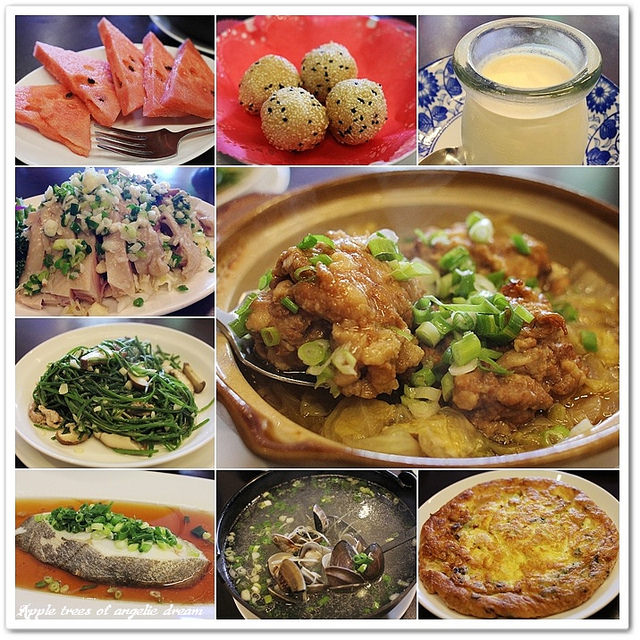
很多人都會覺得吃合菜都要人多一點才能去吃，這次Darren要介紹這家合菜餐廳
<
2人成行也可以吃到超值合菜料理，店家運用季節食材和尚青海鮮所提供台味料理
不僅讓人呷巧也可以呷飽，店家全新開幕用餐環境舒適，也有提供多人聚餐包廂
高cp值的台菜餐廳位於中壢圖書館附近的巷弄裡，店名就做『海竹台灣味料理』
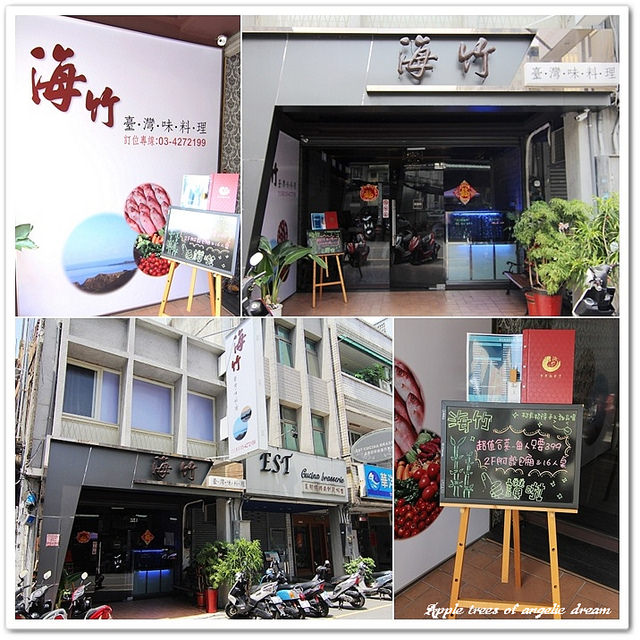
海竹台灣味料理位於中台路上，開車來的朋友對面有店家特約停車場方便停車
從火車站走過來約10多分鐘就可以抵達，店門外觀有點低調不過位置還算好找
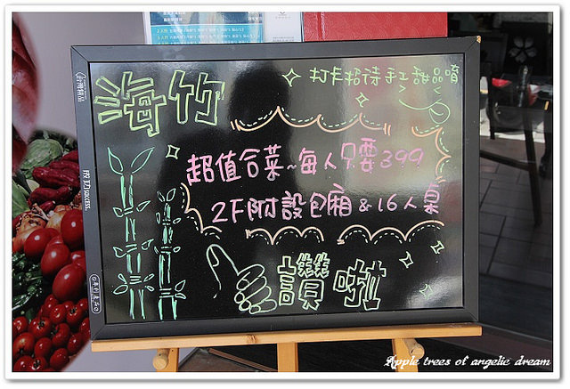
店門口擺著超值合菜每人只要399+10%，還有MENU可以先讓大家參考一下
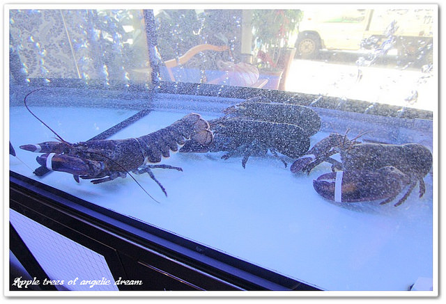
門口有個大玻璃水缸裡頭有波士頓龍蝦，看到他們就覺得好兇猛好想吃掉它們唷XD
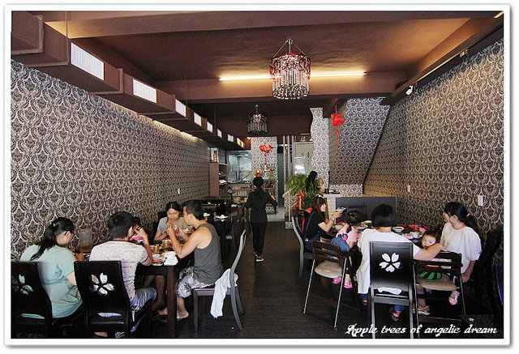
店家用餐空間共有2層樓，光是一樓的座位數就不少，整體裝潢只黑色基調為主
木頭桌椅搭配黑花紋壁紙，天花板還用水晶吊燈讓人有種在高檔環境吃料理的氛圍
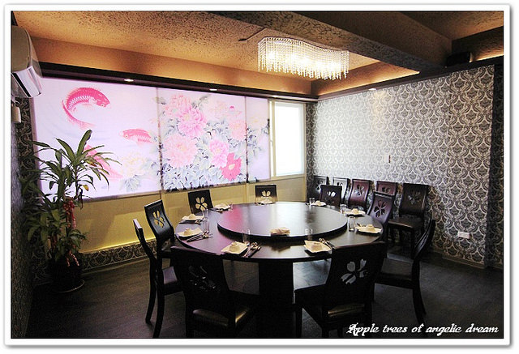
二樓空間及座位數又比一樓多，主要以大圓桌為主，提供16人以上的大包廂
場地不錯附近的學校很多如果謝師宴在這裡辦也不錯，也適合公司團體來聚餐
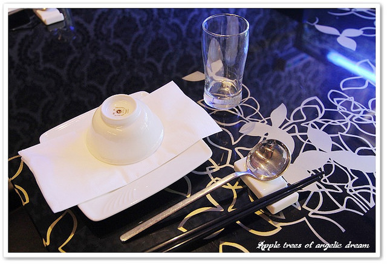
介紹完環境準備入座點餐，順帶一提頭家都是出自大飯店，所以對於餐具料理服務很講究
瞧瞧桌面上的餐具有在飯店吃喜宴的FU，而且老闆娘點餐都會蹲著點詳細解說服務超好
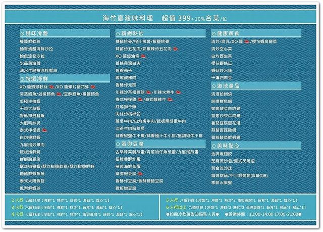
MENU~超值399+10%合菜/位，MENU下面有2人行5道料理，越多人當然越划算囉!!
至於品項的部份有風味冷盤、特選海鮮、精緻熱炒、蛋與豆腐、蔬食湯品及美味點心等
內容除了家常快炒，連紅燒獅子頭、川辣沙茶扣蹄筋、川辣水煮牛、醬爆油條等功夫菜都有
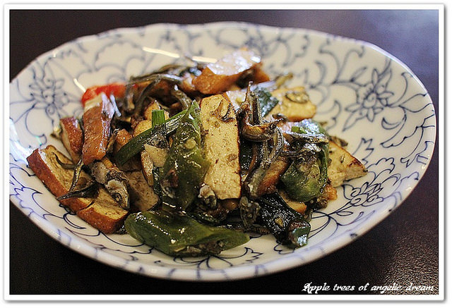
點完餐後店家會先上盤招待的小菜讓大家先開開胃~
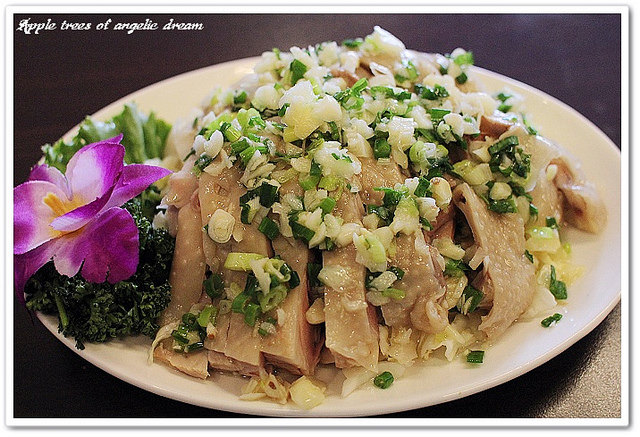
▲水晶蔥油雞
餐點都是現點裡頭的廚師現做上菜速度非常快，點完馬上先上第一道水晶蔥油雞
滑嫩Q彈的雞肉搭配提味的蔥油醬非常好吃，重點是雞肉好嫩幾乎沒骨頭食用方便XD
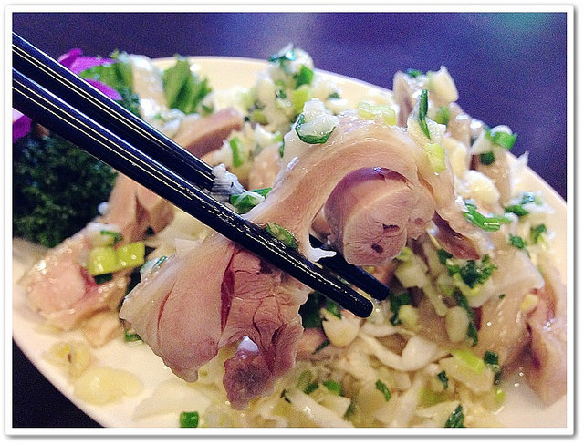
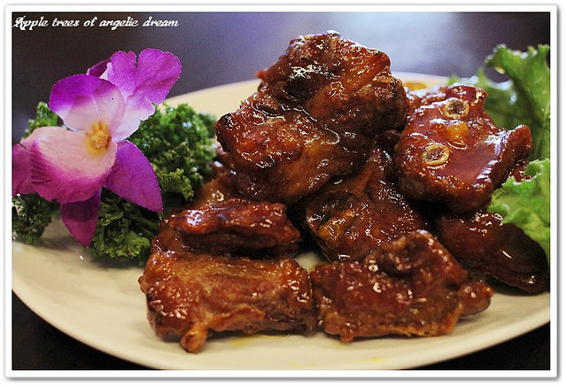
▲橙汁排骨
熱炒類我點了橙汁排骨，吃起來淡淡的橙香微甜不膩，呷一塊排骨配上白飯超級下飯好吃
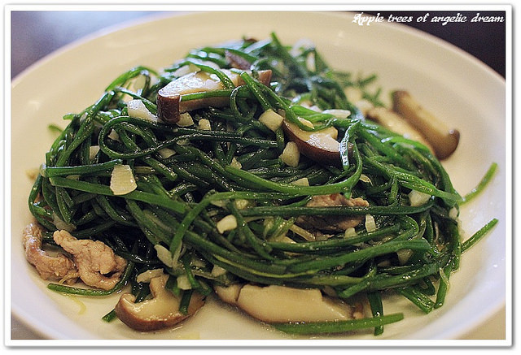
▲香菇炒水蓮
水蓮菜炒香菇水蓮的口感清爽脆嫩，搭配香菇增添香氣，吃起來有甘甜可口香氣很足
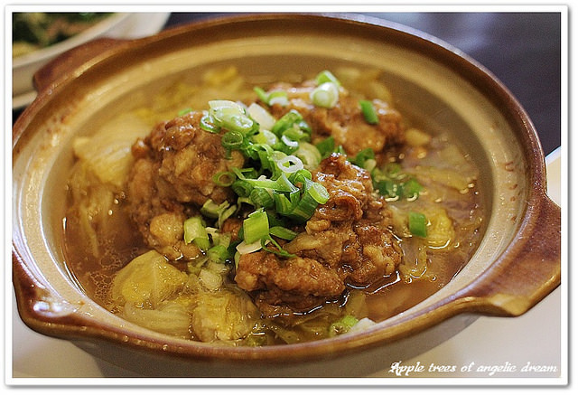
▲紅燒獅子頭
這道紅燒獅子頭是店家招待的唷!!店家說點合菜組合會看客人少點什麼招待一道料理
聽到這個整個覺得店家佛心來的，而且招待這道紅燒獅子頭讓人驚豔，圓圓的肉丸子
配上滷白菜用料紮實，肉丸子吃起來軟嫩味濃不油膩，配白飯連大人小孩都愛的料理
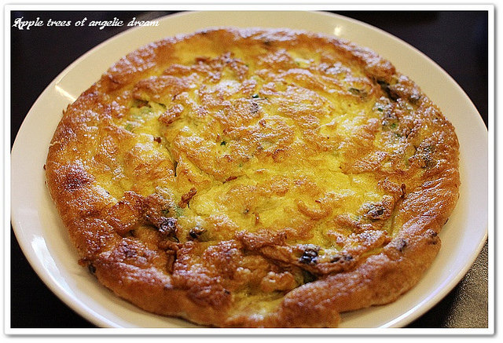
▲青蔥吻仔魚煎蛋
這道煎蛋上桌時乍看來有點像披薩，因為厚度有夠厚的啦!!吃起來濃郁蛋香又厚實
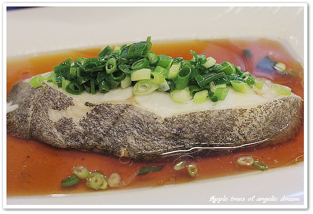
▲清蒸鱈魚
店家料理鱈魚有清蒸剁椒豆酥椒鹽等作法，我選擇清蒸比較清爽魚肉鮮美柔嫩乳口即化
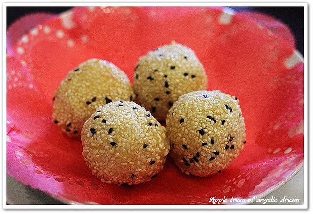
▲黃金流沙球
小心會燙口的黃金流沙球，芝麻外皮吃起來脆脆的裡頭口感彈牙，內餡爆漿非常可口
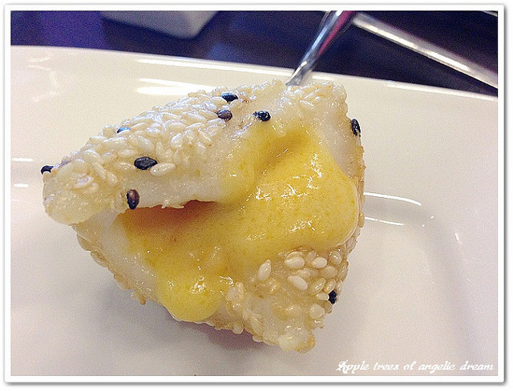
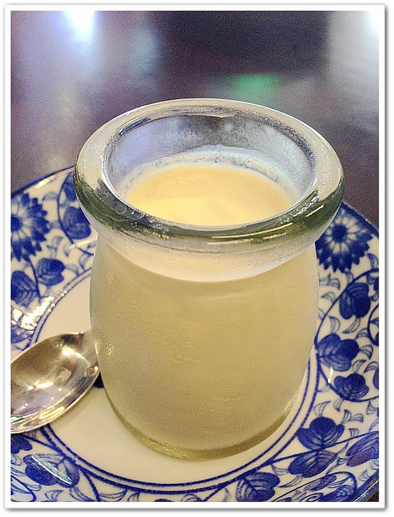
▲手工奶酪
店家現在推打卡就送手工甜點，打個卡當作餐後甜點也不錯，而且還蠻好吃的
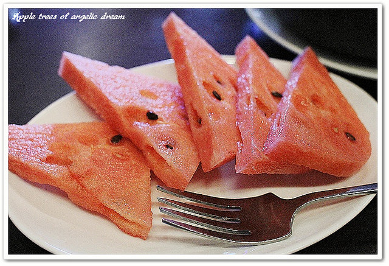
▲餐後水果
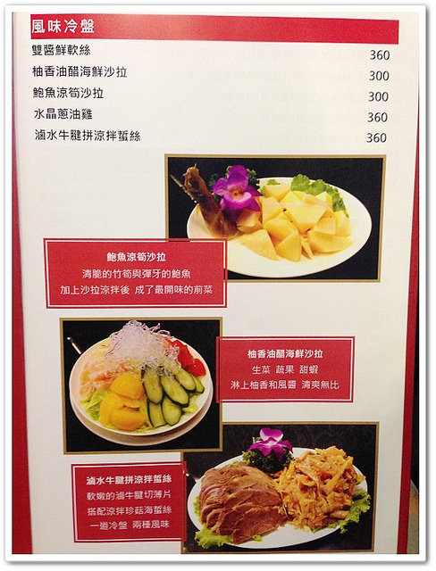
店家不只有合菜套餐也有單點品項，不過還是建議搭配合菜的方式比較划算CP較高囉
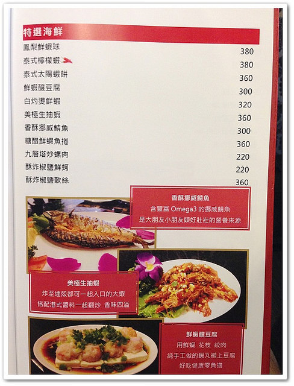
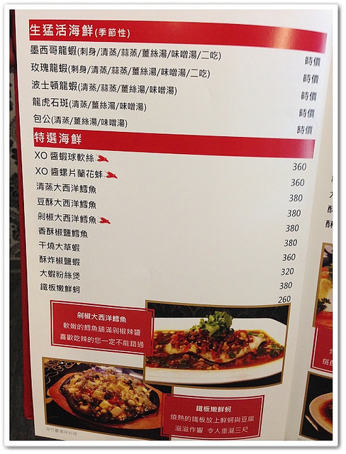
剛開始聽到海竹台灣味料理還一直覺得是走台台路線的快炒店，沒想到店家在料理
方面的選擇很多元有台味料理也有手路功夫菜，用餐空間也用心打造出舒適雅緻的環境
搭配合菜每位399+10%，整個吃下來很飽又好吃和服務好，算是高CP值又用心的店家唷
ψ(￣︶￣)ψ=========店家詳細資料=========ψ(￣︶￣)ψ
◆海竹臺灣味料理
地 址：桃園市中壢區中台路 13號
電 話：03-427-2199
營業時間：11:00~14:00/17:00~21:00 (週一公休)
消費提醒：合菜399+10%/位，店門口前有停車場，打卡送手工甜點
引用文章:Darren 蘋果樹旅遊玩樂誌